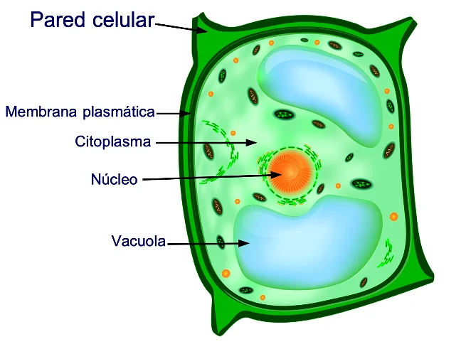

Una pared celular es una estructura extracelular resistente que protege el contenido de las células de arqueas, bacterias, algas, hongos y plantas. Las células animales no poseen pared celular.
La pared celular se encuentra por fuera de la membrana plasmática de las células. Aunque el nombre pueda dar la impresión de que se trata de un muro infranqueable, la pared celular es dinámica, por lo que media las relaciones de las células con el entorno.
La composición de la pared celular depende del tipo celular. Por ejemplo, la pared celular de las células vegetales está compuesta por celulosa, mientras la pared celular de los hongos está formado por quitosano y glucanos. En líneas generales, están formadas por capas sobrepuestas y entrecruzadas con enlaces fuertes.
La pared celular en la mayoría de los organismos cumple las siguientes funciones: